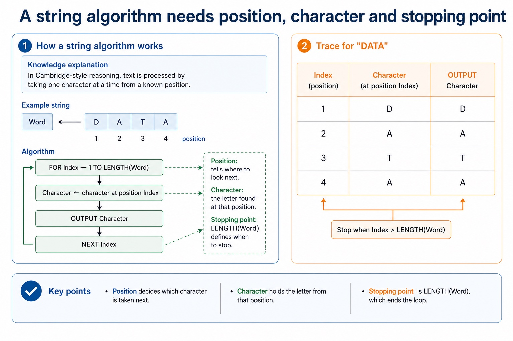
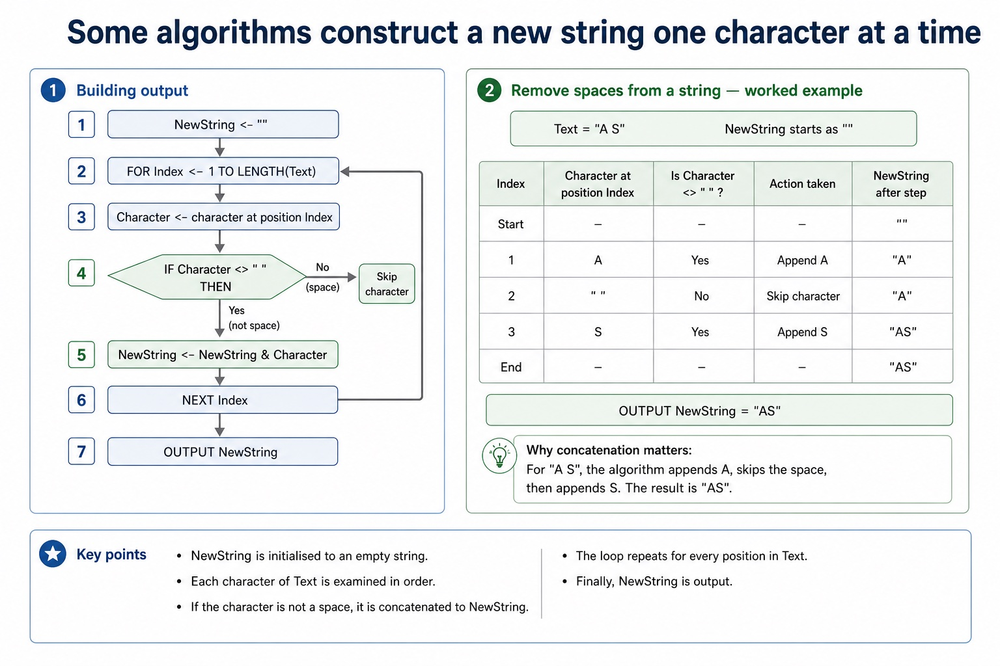
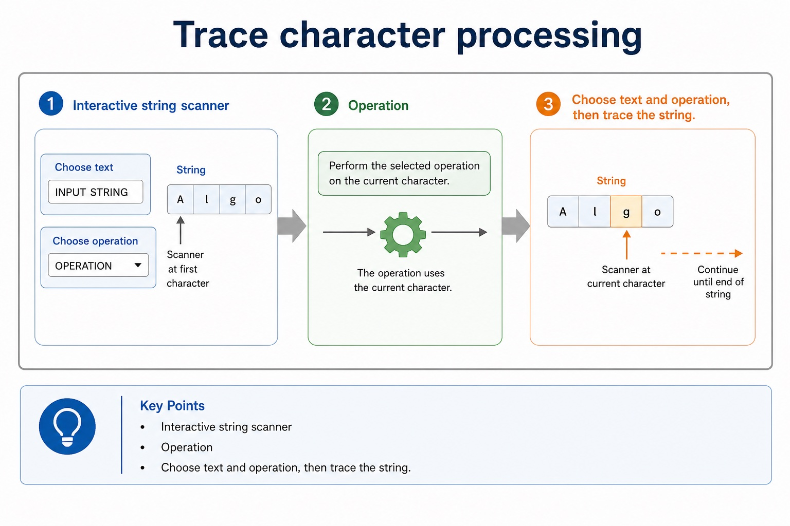

A string is a queue of characters pretending to be one thing.
String-processing algorithms treat text as individual characters that can be inspected one at a time.
Today you will trace loops that count characters, find a target, validate a simple pattern and build a
new string. The final answer is not "use a function"; the marks are in the loop, condition and update.
Scaneach character in a string using a controlled loop
Processcount, search, validate or build output from characters
Traceindex, character, flag and count changes accurately
"COMPUTER"
1C
2O
3M
4P
5U
6T
7E
8R
Paper 2 often gives marks for index movement and character tests, not for saying "the program checks the word".
Why this matters
String questions frequently reward loop bounds, character extraction, comparison, flag updates and final output separately.
Common trap
Do not confuse Java's 0-based indexing with Cambridge-style pseudocode examples that often use positions 1 to LENGTH(String).
Warm-up hook
Which letter does the algorithm inspect first?
For the string "DATA", a Cambridge-style loop starts with `Index <- 1`. Which character is inspected first?
Choose the first character for a 1-based pseudocode trace.
Knowledge explanation
A string algorithm needs position, character and stopping point
Concrete model
In Cambridge-style reasoning, text is processed by taking one character at a time from a known position.
Word <- "DATA"
FOR Index <- 1 TO LENGTH(Word)
Character <- character at position Index
OUTPUT Character
NEXT Index
Trace for "DATA"
Index
Character
1
D
2
A
3
T
4
A
Chinese support: string = 字符串；character = 字符；index/position = 下标/位置。
A string algorithm needs position, character and stopping point

A string algorithm needs position, character and stopping point: source-grounded visual explanation.
Lesson fact: Knowledge explanation
Lesson fact: Concrete model
Lesson fact: In Cambridge-style reasoning, text is processed by taking one character at a time from a known position.
Lesson fact: Word <- "DATA"
Lesson fact: FOR Index <- 1 TO LENGTH(Word)
Lesson fact: Character <- character at position Index
Lesson fact: OUTPUT Character
Lesson fact: NEXT Index
Lesson fact: Trace for "DATA"
Lesson fact: Character
Core patterns
Most AS string algorithms are four familiar patterns
Pattern
State variable
Typical condition
Output
Count
`Count`
`Character = Target`
number of matches
Search
`Found` flag
`Character = Target`
true/false or position
Validate
`Valid` flag
character is allowed / not allowed
valid or invalid
Build
`NewString`
copy or transform selected characters
constructed text
Most AS string algorithms are four familiar patterns
Most AS string algorithms are four familiar patterns: source-grounded visual explanation.
Lesson fact: Core patterns
Lesson fact: State variable
Lesson fact: Typical condition
Lesson fact: Character = Target
Lesson fact: number of matches
Lesson fact: Found flag
Lesson fact: Character = Target
Lesson fact: true/false or position
Lesson fact: Validate
Lesson fact: Valid flag
Lesson fact: character is allowed / not allowed
Lesson fact: valid or invalid
Tracing strings
Trace the current character, not just the final result
Example: count letter A in "DATA"
Count <- 0
FOR Index <- 1 TO LENGTH(Word)
Character <- character at position Index
IF Character = "A" THEN
Count <- Count + 1
ENDIF
NEXT Index
OUTPUT Count
What the trace must show
For "DATA", the inspected characters are D, A, T, A. Count changes only on the two A characters, so the final count is 2.
Do not increase Count for every character unless the question asks for string length.
Building output
Some algorithms construct a new string one character at a time
Remove spaces from a string
NewString <- ""
FOR Index <- 1 TO LENGTH(Text)
Character <- character at position Index
IF Character <> " " THEN
NewString <- NewString & Character
ENDIF
NEXT Index
OUTPUT NewString
Why concatenation matters
For "A S", the algorithm appends A, skips the space, then appends S. The result is "AS".
Chinese support: concatenate = 连接字符串。The `&` symbol here means join strings in pseudocode-style notation.
Some algorithms construct a new string one character at a time

Some algorithms construct a new string one character at a time: source-grounded visual explanation.
Lesson fact: Building output
Lesson fact: Remove spaces from a string
Lesson fact: NewString <- ""
Lesson fact: FOR Index <- 1 TO LENGTH(Text)
Lesson fact: Character <- character at position Index
Lesson fact: IF Character <> " " THEN
Lesson fact: NewString <- NewString & Character
Lesson fact: NEXT Index
Lesson fact: OUTPUT NewString
Lesson fact: Why concatenation matters
Lesson fact: For "A S", the algorithm appends A, skips the space, then appends S. The result is "AS".
Pseudocode vs Java
Keep exam pseudocode readable and avoid Java indexing leakage
Cambridge-style pseudocode
VowelCount <- 0
FOR Index <- 1 TO LENGTH(Word)
Character <- character at position Index
IF Character = "A" OR Character = "E" OR Character = "I" OR Character = "O" OR Character = "U" THEN
VowelCount <- VowelCount + 1
ENDIF
NEXT Index
OUTPUT VowelCount
Java support only
int vowelCount = 0;
for (int index = 0; index < word.length(); index++) {
char character = word.charAt(index);
if ("AEIOU".indexOf(character) >= 0) {
vowelCount++;
}
}
Exam reminder: Java uses `charAt(0)` for the first character. Do not copy Java braces, semicolons or 0-based loop bounds into Cambridge pseudocode unless the question asks for Java.
Keep exam pseudocode readable and avoid Java indexing leakage
Lesson fact: Character <- character at position Index
Lesson fact: IF Character = "A" OR Character = "E" OR Character = "I" OR Character = "O" OR Character = "U" THEN
Lesson fact: VowelCount <- VowelCount + 1
Lesson fact: NEXT Index
Lesson fact: OUTPUT VowelCount
Lesson fact: Java support only
Lesson fact: int vowelCount = 0;
Lesson fact: for (int index = 0; index < word.length(); index++) {
Interactive pattern chooser
Identify the string-processing pattern
Choose a clue to classify it.
Interactive string scanner
Trace character processing
Choose text and operation, then trace the string.
Trace character processing

Trace character processing: source-grounded visual explanation.
Lesson fact: Interactive string scanner
Lesson fact: Operation
Lesson fact: Choose text and operation, then trace the string.
Worked examples
String-processing traces
Practice with instant checking
String algorithm precision
Type concise answers. Use Show answer after committing to a response.
Mistake debugging
Fix string-processing mistakes
Exam-style questions
Original Cambridge-style string questions with expandable MS
These questions target loop bounds, character extraction, flags, counters, construction and strict pseudocode wording.
Summary
String-processing checklist
PositionLoop through each character from the first position to the string length.
StateUse Count, Found, Valid or NewString depending on the task.
EvidenceTrace current character and variable changes; final output alone is rarely enough.
Homework
Clear tasks for consolidation
Task 1: Trace tableTrace an algorithm that counts the letter `S` in `ASSESS`. Show Index, Character and Count after each character.Task 2: PseudocodeWrite Cambridge-style pseudocode to check whether a string contains the character `@`. Output `Found` or `Not found`.Task 3: Build algorithmWrite pseudocode to create a new string containing only the non-space characters from an input string.